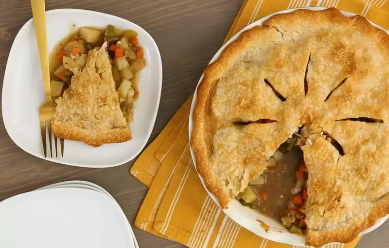

Veggie Pot Pie

Description
This mouthwateringly delicious pot pie is vegetarian. There's nothing like a warming pie with a golden crust and delicious filling. Our veggie pies come in many different forms, and are stuffed with fillings like creamy leek, savoury tomato, buttery squash and even spaghetti. Our vegetarian pie recipes make easy vegetarian entertaining ideas.
Ingredients
- 2 tablespoons olive oil
- 8 ounces mushrooms, sliced
- 1 onion, chopped
- 1 clove garlic, minced
- 2 large carrots, diced
- 2 potatoes, peeled and diced
- 2 stalks celery, sliced
- 2 cups cauliflower florets
- 1 cup green beans
- 1/4 cup water
- 1 teaspoon kosher salt
- 1 teaspoon ground black pepper
Directions
- Preheat the oven to 425 degrees F (220 degrees C).
- Heat oil in a large skillet or saucepan. Add mushrooms, onions, and garlic; cook for 3 to 5 minutes, stirring frequently. Stir in carrots, potatoes, and celery. Stir in cauliflower and green beans; add vegetable broth and bring to a boil. Reduce heat and simmer until vegetables are just tender, about 5 minutes. Season with salt and pepper.
- Mix water, cornstarch, and soy sauce in a small bowl until cornstarch is completely dissolved; stir into vegetables and cook until sauce thickens, about 3 minutes.
- Roll out 1/2 of the dough to line an 11x7-inch baking dish. Pour vegetable filling into the pastry-lined dish. Roll out remaining dough; arrange over filling, then seal and flute the edges.
- Bake in preheated oven until pie is golden brown on top, about 30 minutes.